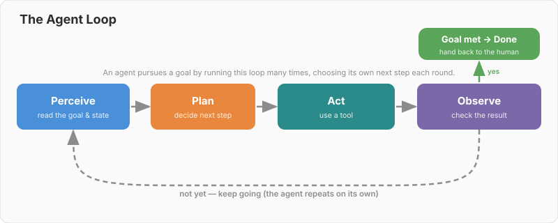
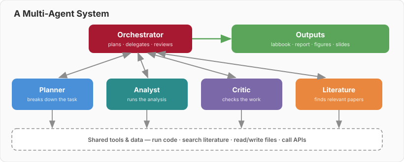
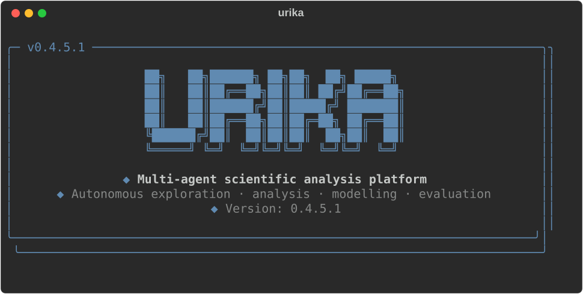
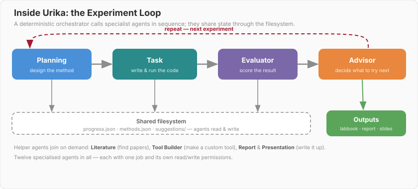
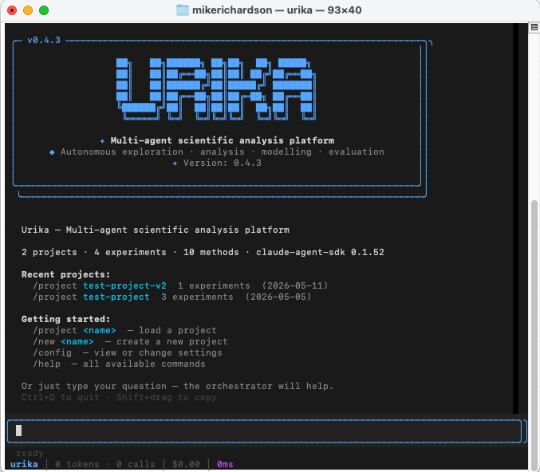
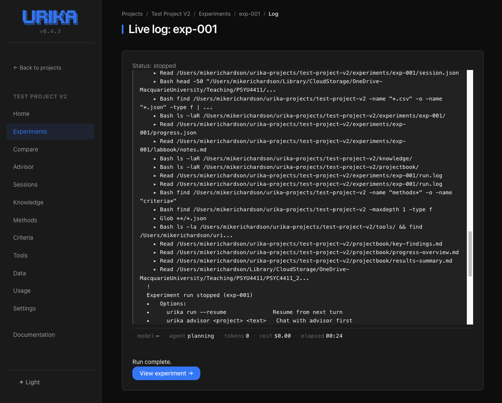
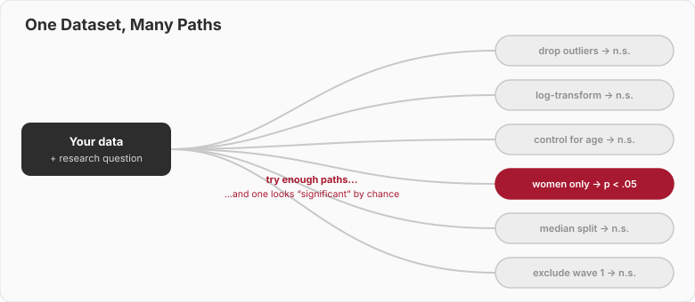
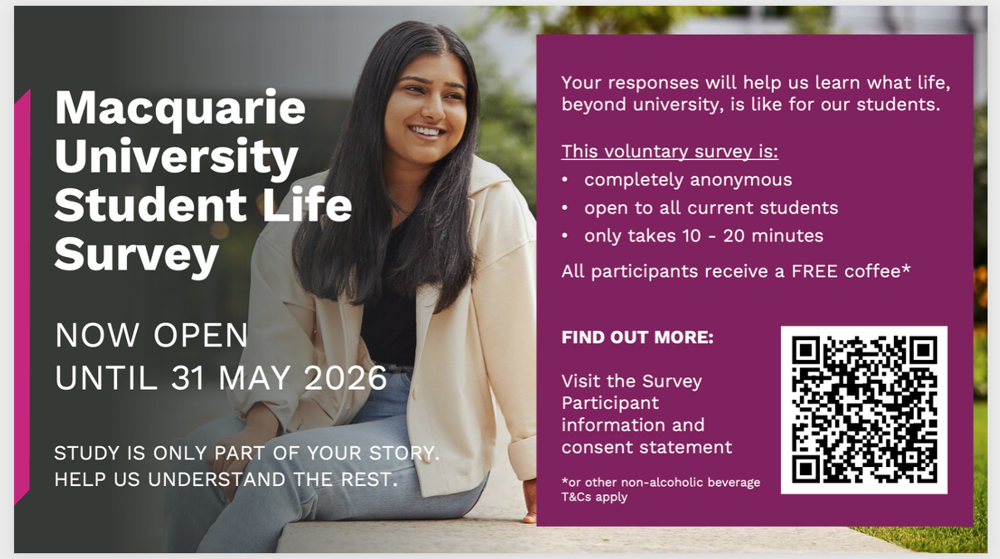

Week 13 · Final Session · Semester 1, 2026
Two hours, two halves.
The first hour is a lecture. The second hour is a conversation — we genuinely want your honest take on this course.
Thirteen weeks in one breath
Through every week, one constant: AI as a collaborator you direct and check — not an oracle you trust blindly.
Outer: Plan → Execute → Evaluate → Document
Inner: Engineer → Plan → Generate → Verify → Refine
Prompt engineering — asking clearly enough to get useful output
Context engineering — giving the model the right information to work with
The specific models will change — probably within months. The loop is what lasts: plan, generate, and above all verify.
Most weeks added a new way of working with AI — a ladder you’ve been climbing all semester:
| Week | Skill | Core idea |
|---|---|---|
| 2 | Prompting | Give the AI enough context to write good code |
| 4 | Debugging | Share the full error context, not just the message |
| 6 | Refactoring | Make working code cleaner and easier to read |
| 8 | Documentation | Write clear methods descriptions for your analysis |
| 10 | Complex debugging | Diagnose silent failures from behaviour, not errors |
| 13 | Directing agents | Set the goal, supervise the loop, and verify the output |
Today’s capstone skill: directing and verifying autonomous agents — the natural next step once the AI can act on its own.
You write a prompt
It returns code or an answer
You run it and check the result
You decide the next step yourself
You give a goal
The system plans the steps
It acts, checks, and repeats on its own
You supervise rather than drive each step
What happens when AI can take steps on its own
You ask → it answers → done. One turn.
You give a goal → it plans, acts, and checks → over many turns, until the goal is met.
An agent is just a language model + tools + a loop + memory, pointed at a goal. Nothing magic — but the loop changes what’s possible.

The same loop you have been running by hand — the agent now runs it for itself, deciding each next step.
On its own, a language model can only produce text. Tools let it actually do things:
Without tools, an agent can only talk. With tools, it can investigate, compute, and produce — and then read back what happened.
The context window — what the model can “see” right now. Limited, like working memory.
Notes, files, or a database the agent can write to and re-read later — so it doesn’t forget across many steps.
This is context engineering again (Weeks 1 & 11) — now the agent manages its own context as it works.

Split a big task across specialists — and let a critic agent check the work. It mirrors how a research team divides labour.
Search, screen, and synthesise papers into a cited summary you then check.
Clean a messy dataset, fit several models, and compare them — end to end.
Automate the “beat the baseline” search across many model variants.
Generate figures, tables, and first-draft methods sections for you to revise.
Some teams even use agents to simulate participants for piloting a design — useful, but treat it with real caution (it is not data about real people).
You hand an agent a dataset and a research question. It might:
…with a human checkpoint before anything is trusted. The agent does the legwork; you remain the scientist.

Urika is a multi-agent scientific analysis platform — from our own lab (xkiwilabs/Urika).
It is exactly the loop and the multi-agent ideas from the last few slides, made real for research.

The same loop you learned — planning, acting, evaluating, deciding what’s next — run by a team of specialist agents.
Three interfaces over the same project — a CLI for scripts and batch jobs, plus:

TUI — chat with the orchestrator & watch a run live

Dashboard — monitor long runs & share results in a browser
Cross-platform · runs on local, private models via Ollama · early development · github.com/xkiwilabs/Urika
Autonomous web & literature research that returns a cited report.
An autonomous coding agent — writes and runs code to complete a task.
A lightweight Hugging Face framework for building your own simple agents.
Multi-agent science — the research-focused option we just saw.
Most are free and open — you can try them today. Start small, and always keep a human in the loop.
Agents are powerful. They are also fallible in ways that matter:
The more autonomy you give, the more important the Verify step becomes — not less. A human stays accountable for the result.
Picture a research task of your own.
Which part would you happily hand to an agent — and which part would you never hand over, no matter how good it got?
The ethics of modern AI
Integrity, authorship, privacy, reproducibility.
Learning vs offloading; fairness of access.
Bias, labour, environment, power, truth.
The through-line for all three: capability is not the same as permission. Just because AI can doesn’t mean you should.
Co-Authored-By line.A fabricated reference in your thesis is still your fabricated reference — “the AI wrote it” is not a defence.
“I asked ChatGPT” is not a method. Which model, which version, what prompt, what data — that is a method.
An agent can run thousands of analyses while you sleep — the garden of forking paths (Week 3) on fast-forward.

So automation makes pre-registration and held-out test sets matter more, not less. Decide your analysis before you let the agent loose.
This course’s bet: learn with AI from day one, while keeping the judgment to know when it’s wrong.
Models learn our biases from data (Week 5) — and can scale them up.
Which jobs change, which disappear, and who decides?
Training and running large models uses real energy and water.
Misinformation, deepfakes, and a few firms holding the capability.
As researchers, you will help shape how these tools are used — and studied.
None of this is new ethics — it’s good science, applied honestly to a powerful new tool.
Where is your line?
What use of AI in research feels clearly fine to you — and what feels clearly over the line? What sits uncomfortably in between?
Hold that thought — it’s where our discussion begins.
An open conversation with the teaching team & guests
No right answers — we want the honest version.
Your feedback directly shapes next year’s course. Please take a few minutes now.
Anonymous · takes about 5 minutes · mqedu.qualtrics.com/jfe/form/SV_83047akpZ0xSTYy
While you’re at it — Macquarie’s university-wide student survey. Scan the QR code on the flyer to take part.

You came in having (mostly) never written a line of code. You leave as AI-literate researchers.
Keep running the loop: Plan → Prompt → Verify → Refine → Document.
Course repo · xkiwilabs/Urika · this week’s readings